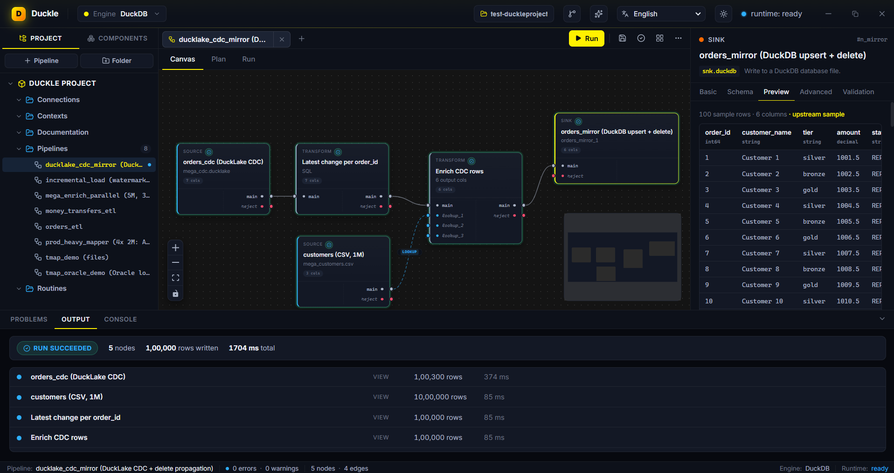
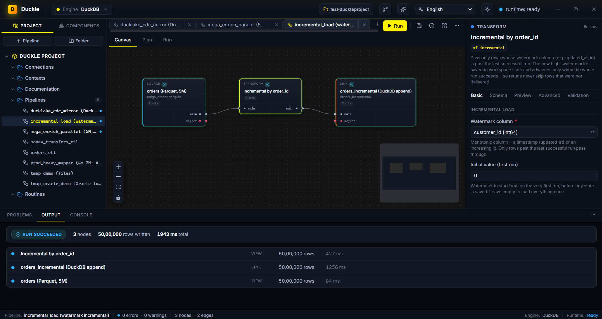

Duckle is a local-first ETL studio with a built-in AI assistant. Connect 160+ sources and destinations, build pipelines visually or describe them in plain English, and run them at native DuckDB speed. No cloud, no servers, no lock-in.
Files, databases, warehouses, object stores, streaming brokers, SaaS APIs, NoSQL and vector DBs. Every connector is covered by tests, not a coming-soon list.

Drag sources, transforms, validators and sinks onto a canvas and wire them together. The visual Map editor joins a main input to up to three lookups with per-output typed expressions and an inline filter. Every node still compiles to readable SQL you can inspect in the Plan tab.
Execution runs through DuckDB - vectorized and columnar. Branches fan out across your CPU cores automatically. Every run reports per-node status, row counts, timings and a live preview, so you see exactly what happened and where.

Upsert into Snowflake, BigQuery or Postgres on a schedule, with change data capture and delete propagation.

Salesforce, HubSpot, Stripe, GitHub, Jira and generic REST / GraphQL / OData - normalized into rows you can join.

Glob S3 / GCS / Azure, read Parquet, Iceberg, Delta and DuckLake, and write Hive-partitioned output at native speed.

The assistant runs Qwen 2.5 Coder locally through llama.cpp - no API key, no cloud. Ask in plain English; Duckie streams a valid pipeline and drops positioned, wired nodes onto the canvas. The same six AI transforms prep data for RAG, all offline.
Crunch a billion-row Parquet plus SQLite and ADBC dimensions locally, and upsert only the aggregate into Snowflake.
100,000 changes mirrored into DuckDB with upsert and delete propagation, exactly-once on success.
5 million rows loaded on the first run; later runs read only rows past the saved watermark.
Every pipeline compiles to SQL and runs through DuckDB. Duckle sits in the ingestion and transformation layer alongside tools like dlt, dbt and Evidence, and reads the wider family natively: DuckLake tables, MotherDuck, the Quack protocol, and the community extensions.
An independent, open-source member of the DuckDB ecosystem. Duckle matches the DuckDB brand palette and builds on the engine, but is not affiliated with or endorsed by DuckDB Labs or MotherDuck.
Free and open source, dual-licensed MIT OR Apache-2.0. Windows, macOS and Linux. No account, no telemetry.